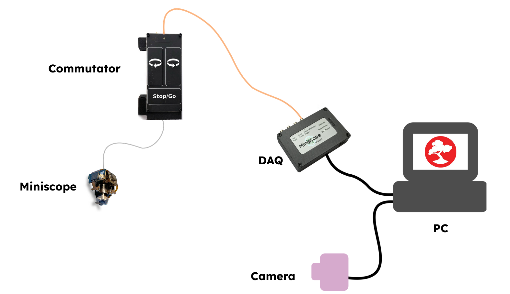

Miniscope Overview#
Miniscope Description#
Miniscopes are miniaturized fluorescent microscopes that can be mounted on the heads of freely-moving animals. For imaging neural activity, the animal contains a Ca2+-dependent fluorescent molecule. As the name suggests, it only fluoresces when bound to Ca2+ ions. Action potentials involve influxes of Ca2+ ions into the cell so fluorescence of these indicators can be used a proxy for neural activity. Miniscopes confer the benefit of enabling animals to behave more naturally and explore physical space while acquiring neural data. Many miniscopes have been developed since their inception in 2011. [1] [2]
A selection of open-source miniscopes developed as of 2018. (A) gardner-lab/FinchScope, image credit: W.A. Liberti III. (B) giovannibarbera/miniscope_v1.0. (C) http://www.miniscope.org. (D) jf-lab/chendoscope, image credit: A. Jacob, Josselyn lab. [3]#
Many more miniscopes have been developed that specialize in certain features such decreased mass, incrased FoVs, etc. To learn more about fluorescent microscopes and miniscopes, refer to the relevant parts of the 2021 Miniscope Workshop video Imaging principles & Miniscope design.
Typical Miniscope System#
A typical miniscope data acquisition system based on the UCLA Miniscope design includes Data Acquisition Hardware and Data Acquisition Software in addition to the miniscope itself. Optional Miniscope Accessories include:
An Open Ephys Coaxial Commutator to prevent twisting of wired connections between a freely-moving animal and a stationary data acquisition system
A MiniCAM is to record animal movement
The diagram below depicts a typical system for acquiring data with the UCLA Miniscope v4.
